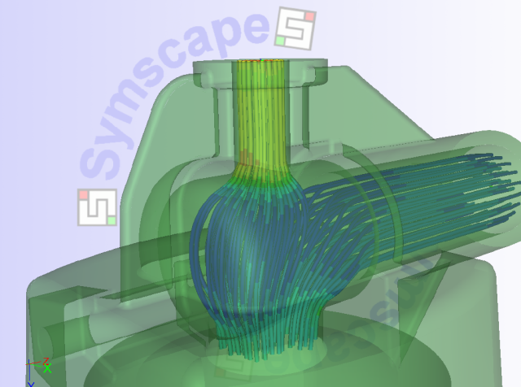

Caedium Panel Flow
Caedium Panel Flow simulates idealized gas (e.g. air) or liquid (e.g. water) flow around streamlined bodies and through simple ducts.

Try our Caedium Professional add-on for a complete Computational Fluid Dynamics (CFD) software system that includes this add-on and others - for details check out our Caedium Product Comparison chart.
Designed for use by engineers who are not CFD experts, the Caedium Panel Flow interface uses standard physics terms to help you easily navigate the simulation setup and quickly obtain meaningful results.
Caedium Panel Flow is flexible and can be used for a variety of design applications including aircraft, boats, submersibles, and cars. You can quickly and easily simulate idealized (potential flow) gases (e.g. air) and liquids (e.g. water) to determine flow directions and the lift or downforce.
Internal CFD Simulation
Caedium Panel Flow is ideally suited for problems that are:
- Irrotational (no cyclones, etc.)
- Inviscid (streamlined bodies, e.g. aircraft, cars)
- Incompressible (Mach number << 1) (Compressible corrections are available)
These assumptions allow fast turnaround using a surface-based panel method analysis technique. For a more general fluid flow approach with fewer constraints and heat transfer capabilities consider our RANS Flow add-on.
Check out Caedium Panel Flow examples and tutorials.
Caedium Panel Flow is an add-on to Caedium.
Features
- Simulate external fluid flow over streamlined models or internal flow through simple ducts
- Take advantage of any symmetry within your model, and get your results up to 4 times faster
- Study transient flow (when combined with geometry motion capabilities provided by the Transient add-on)
- Enable compressible corrections which extend the range of Mach numbers to the high subsonic range (< 1)
- Generate geometry-based wakes for lifting configurations such as wings
- Speedup the panel solver using parallel threads (OpenMP) on a multi-core computer
- Speed up results extraction on a multi-core computer using parallel threads and provide interactive 3D visualization while the simulation is running
More
Looking for more Caedium capabilities? Then consider our Professional add-on.